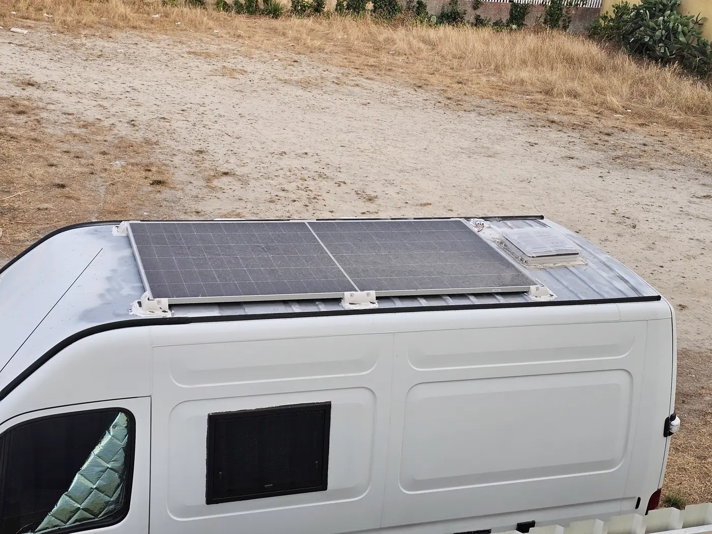

Sistema Elétrico
Aguenta 2 dias sem sol com energia para o frigorífico, as luzes e carregar o telemóvel. E se a carrinha estiver ao sol ou a andar, não precisa de estar ligada à tomada: os painéis solares e o alternador tratam de carregar. A campervan tem três formas de carregar a bateria: painéis solares (590 W), alternador da viatura e ligação à rede 220 V.

USB e tomadas
- 20 portas USB no total, sendo 8 USB-C.
- Conjuntos de USB-C e USB-A junto à cama e na cozinha.
- Disponíveis cabos tipo-C, micro USB e outros para uso imediato.
- Algumas tomadas USB têm botão de ligar/desligar.
Luzes
- Luzes interiores: vermelha, azul e laranja (ambiente).
- Luz específica para a cozinha.
- Luz exterior.
- Luz no compartimento dos sapatos e no painel de água.
Tomadas 220 V / 12 V
- Tomadas 220 V para máquina de café, fogão elétrico e micro-ondas.
- Apenas um destes aparelhos pode funcionar de cada vez.
- Tomada 12 V disponível na casa de banho.